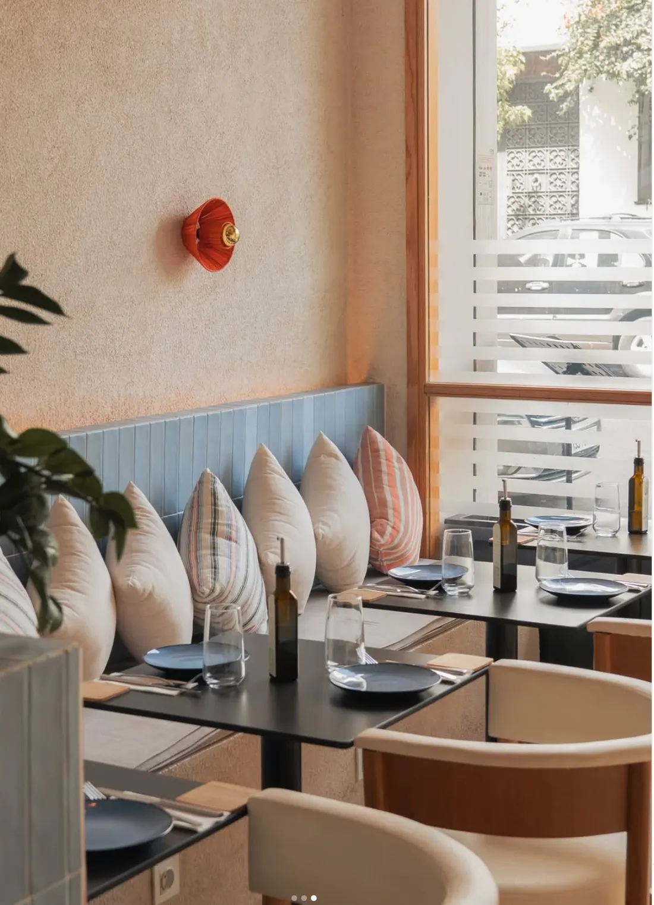
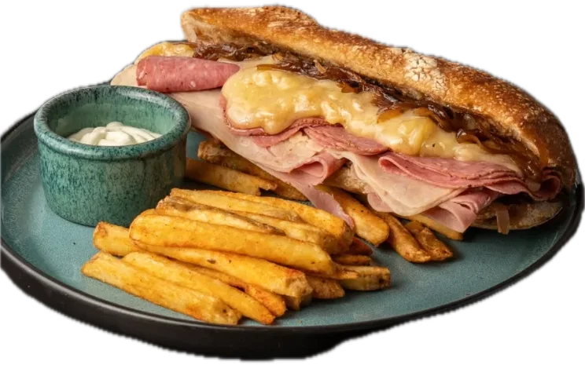
Le Petit Détour, Tanger. Cantine à midi,
Sandwichs au pain croustillant, frites maison et la table près de la fenêtre.
Dès 12h · Rue de Hollande
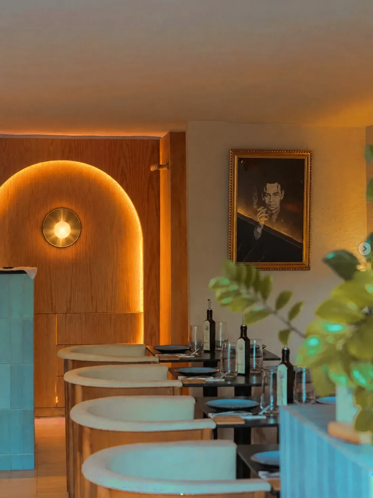
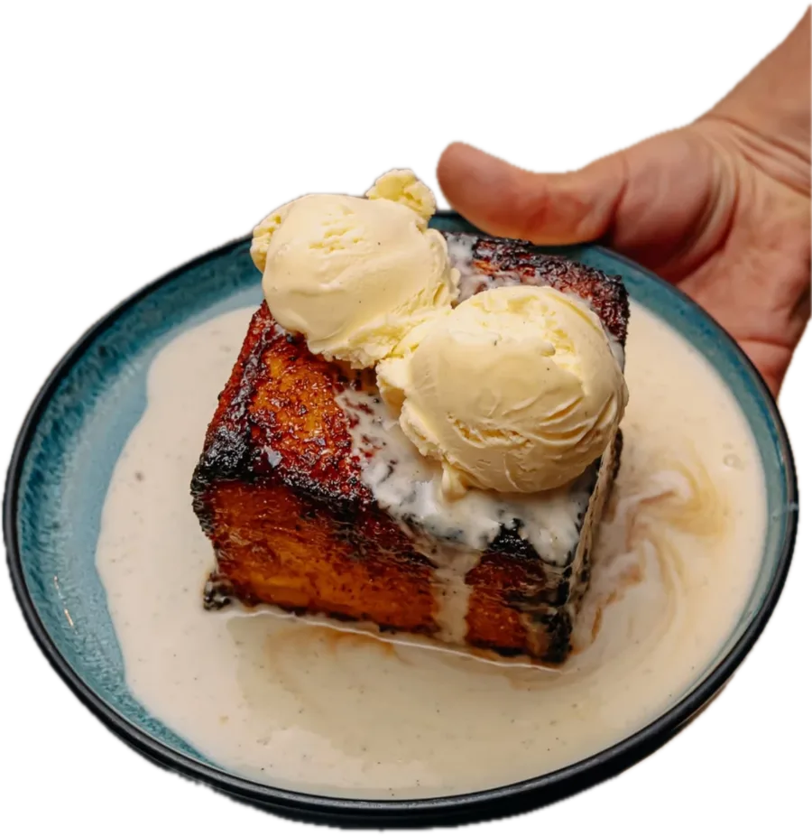
bistrot le soir.
Lampes allumées, assiettes à partager, et l'envie de rester pour le dessert.
Jusqu'à minuit · Tanger
La série sandwichs
Un sandwich, une histoire.
Du pain bien croustillant, des garnitures généreuses, et nos frites pour compléter le tout.
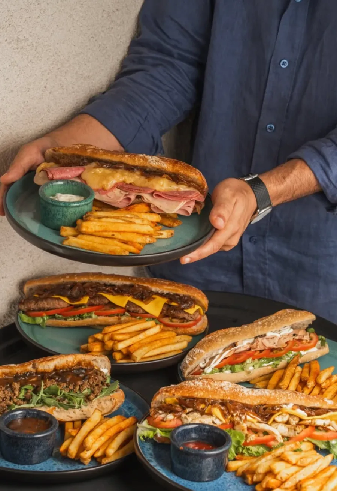
Notre best-seller
Croustillant dehors, fondant dedans.
L'escalope panée, ses pâtes crémeuses et une touche de citron. Le genre d'assiette qui parle d'elle-même.
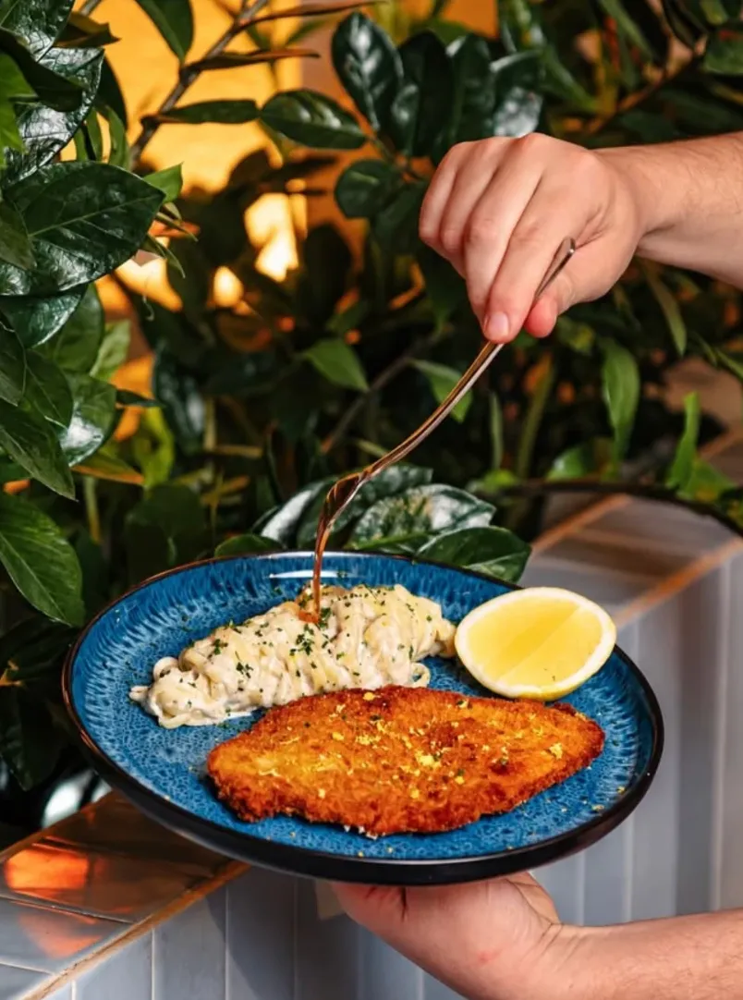
- Filet de bœufSauce champignons, romarin
- Saumon rôtiLinguine, crème
- Gambas al ajilloAil, huile d'olive
- CroquettesTomate confite, basilic
- Guacamole au mortierAvec ses garnitures à côté
- Pain perduGlace vanille, crème anglaise
Le midi qui déborde sur l'après-midi.
On vient pour un sandwich, on reste pour un café. Baptiste, lui, est venu poser son bureau chez nous.
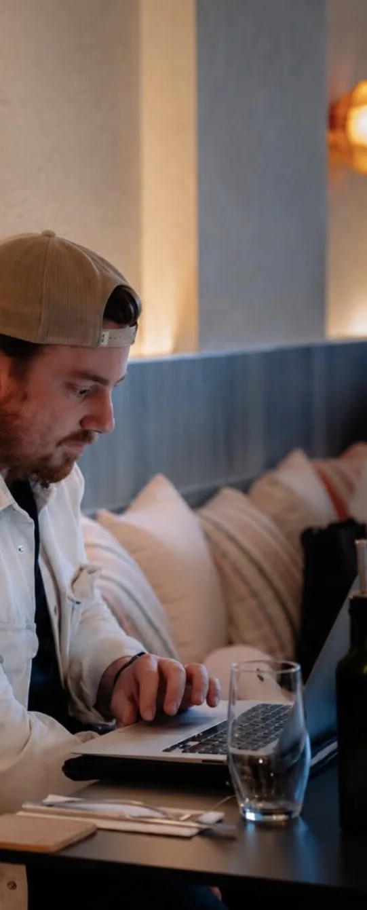
100MAD
Tous les jeudis · Offre étudiante
Un sandwich au choix, des frites, une boisson et un dessert.
Le genre d'endroit qu'on ne veut plus quitter.
Banquettes, coussins rayés, chaises en bouclé. On s'installe pour dîner, on finit par commander le dessert.
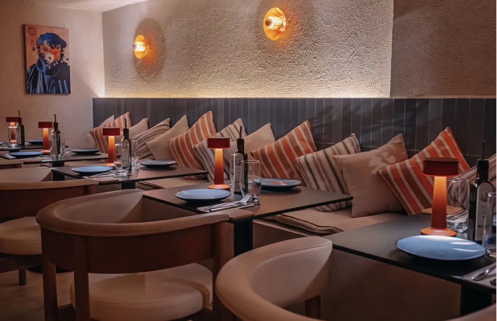
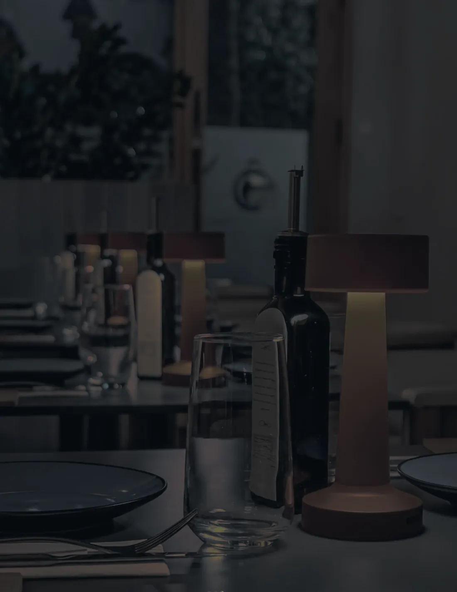
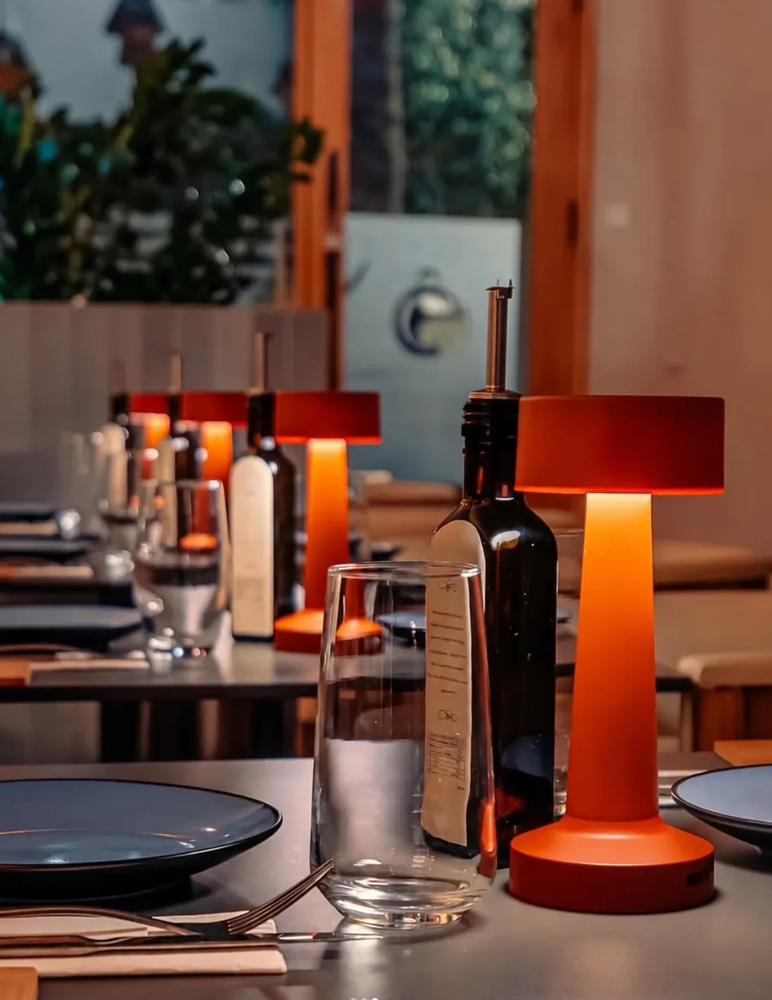
17h
On range les ordinateurs, on garde la table.
19h30
Les lampes s'allument.
La cantine devient bistrot. Même salle, autre lumière.
Ce qu'on dit de nous
“Calm, cosy and genuinely welcoming. Everything we ordered was spot on, and nobody rushed us.”
Ce soir, on partage.
Des assiettes posées au milieu de la table, et tout le monde pioche.
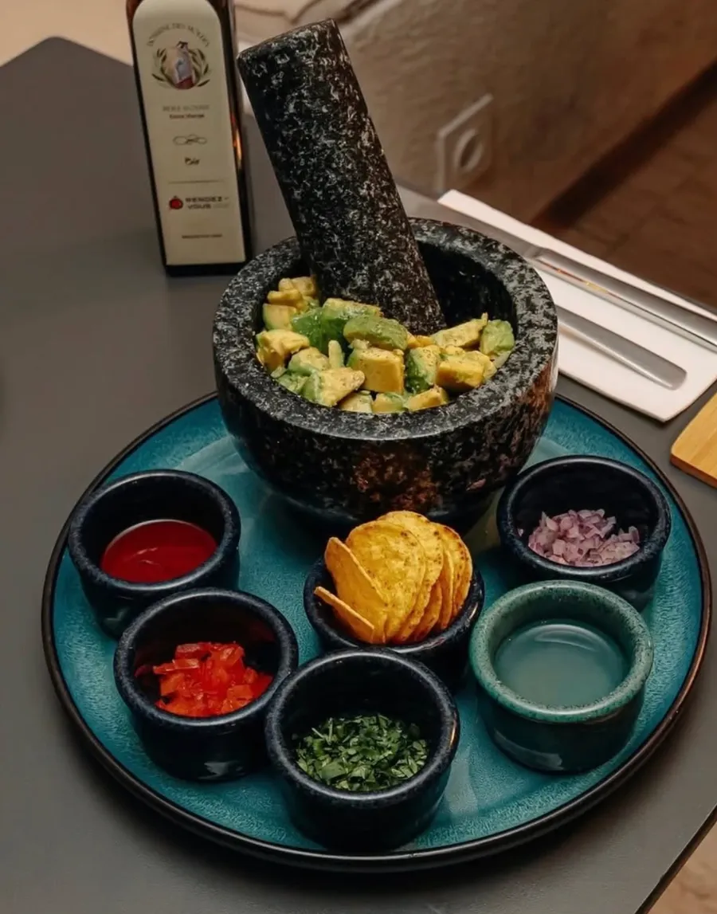
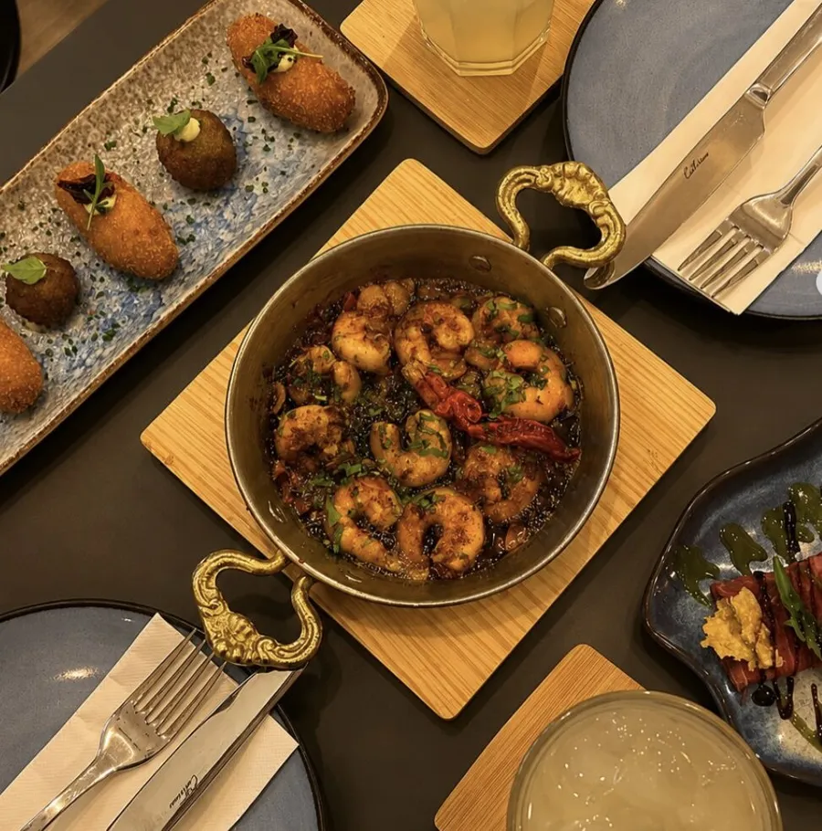
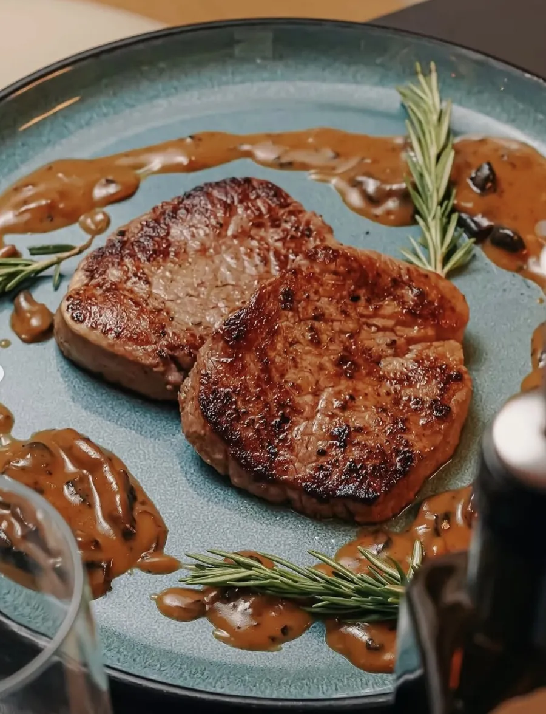